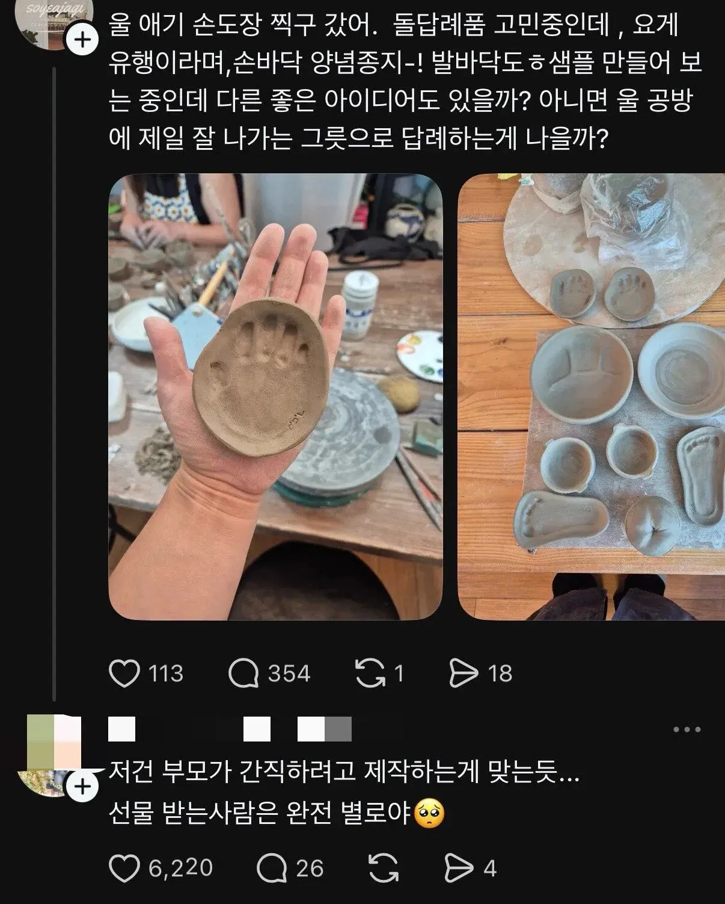

돌잡이 답례품 근황.jpg
댓글
기본적으로 내 애는 나한테만 예쁘다를 좀 깔고가면 좋겠네 애초에 ㅅㅂ 요새 돌잔치도 왜 쳐부르는지 모르겠구만. 가족끼리 밥쳐먹으면서 하세요 사람들 불러서 수금하지말고
저건 걍 가족 기념품이지..
??? 답례가 뭔지 모르나
답례품은 모두가 쓸수있는걸로 줘야지
젤 무난한게 그냥 롤케이크나 쿠키같이 먹는거
수건해 수건 막수건말고 만원짜리 수건에 누구돌잔치 몇월 몇일 해서 선물하면
쓰는사람도 좋고 준사람도 좋고
돌잔치를 가족끼리 했겠지
수건이 짱이야
저거 광고글인데 광고 그지같이 한다고 욕먹었을걸 ㅋㅋ
염병하네 ㅋㅋㅋㅋㅋ 수건이나 돌려라 오바로크 이쁘게 찍고
덜떨어진새키들인가..
요즘 돌잔치는 대부분 직계 가족끼리만 하는데 그에대한 답례겠지.. 무지성 혐오충 왜케많누..
시골 참기름
여태 수건 애기그릇 빵 한과 챔기름 이것저것 받아봤는데 그냥 일상생활에서 쓸수있는게 최고임
애기그릇은 미안하지만 댕댕이 밥그릇으로 쓰고있음